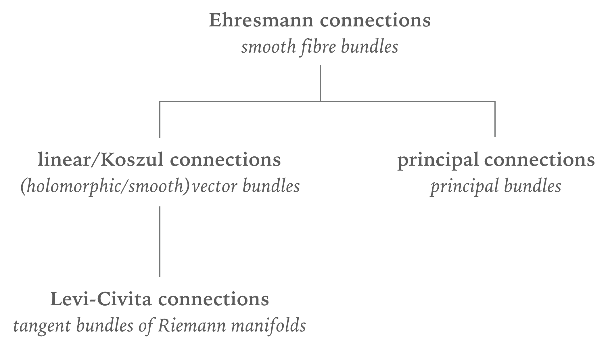
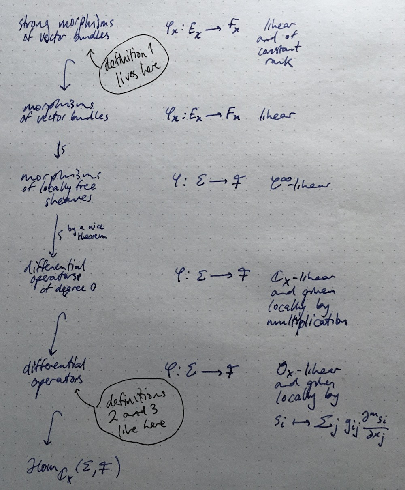

Blog / Confusion about connections
29th of May, 2020
I am a big fan of Stephen Bruce Sontz’s book Principal bundles: The Classical Case, and cannot recommend it enough, as somebody who usually finds differential geometry (a) dull, and (b) incomprehensible. Anyway, there’s a lovely quote from this book about how confusing the terminology surrounding connections can be, so let’s try to clear some of that up today.
First, the quote in question.
In my opinion, the word ‘’connection’’ is overused in this corner of differential geometry. I believe an Ehresmann connection is well named since it gives a way to connect tangent spaces (and other fibres of vector bundles) at distinct points. On the other hand, a Koszul connection \nabla_X is a differential operator since it satisfies Leibniz’s rule. That makes it an object in analysis. But these names are set in stone even though no one knows where that stone is to be found.
I’m in full agreement with this paragraph. There’s a nice little family tree you can draw that helps:

But even when working with just Koszul connections (also known as linear connections), there can be some subtleties between different definitions that are not really always signposted very clearly. Let’s see if I can justify this and explain what I mean a bit better.
Let E\xrightarrow{p}X be a vector bundle, and write TE\xrightarrow{\pi}E to mean the tangent bundle of E. There are now three definitions of a connection on E that we could give:
- \nabla\colon TE\to p^*E that splits;
- \nabla\colon TX\otimes_{\mathbb{R}}E\to E that is \mathscr{C}_X^\infty-linear in the TX factor (so that \nabla_{fz}s=f\nabla_zs) and such that \nabla_z(fs)=f\nabla_zs+(zf)s;
- \nabla\colon E\to\Omega_X^1\otimes_{\mathscr{C}_X^\infty}E such that \nabla(fs)=f\nabla s+\mathrm{d}f\otimes s.
But how can we make sense of having three seemingly different definitions? I mean, the second two are even about vector bundles really, but instead sheaves of \mathbb{R}_X-vector spaces. Indeed, we would call \nabla in the first definition a strong morphism of vector bundles, the \nabla in second definition a differential operator of order 0 in TX and order 1 in E, and the \nabla in the third definition a differential operator of order 1.
Things become a little bit clearer when we look at the following nice hierarchy of notions of morphisms though:
